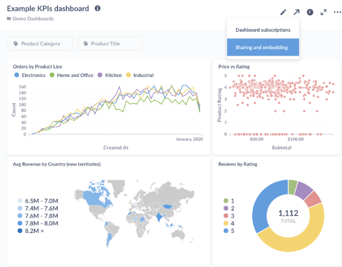
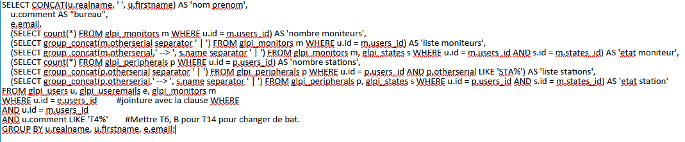
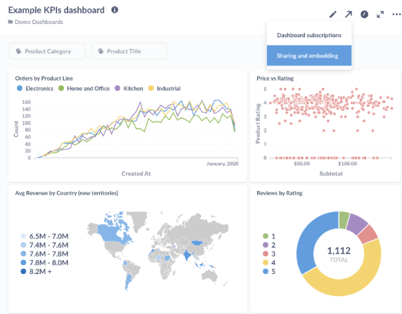
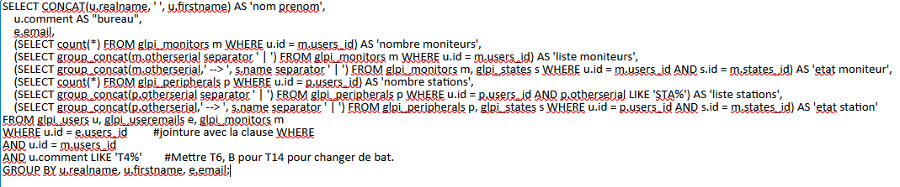

Portfolio.
Ioané SULASHVILI

Ce stage a été réalisé durant la première année du BTS SIO.
Il a été réalisé au sein de l'entreprise MipihSIB, une entreprise dans le secteur de la e-santé, développant
des solutions logiciels et proposant des services d'hébergement destinées aux établissements de santé.
Durant ce stage j'ai été intégré au sein de l'équipe des DSI et j'ai pu réaliser les deux missions suivantes
:
Ces missions ont pu aider les DSI à juger de l'efficacité du logiciel Active KillDisk et également pouvoir
recenser l'ensemble de l'inventaire du site.
Mon expérience au sein du MipihSIB m'a permi de mettre en oeuvre mon savoir-faire, d'apprendre d'avantage sur certains domaines de l'informatique et de rencontrer des collaborateurs.

 



Languages et outils utilisées :